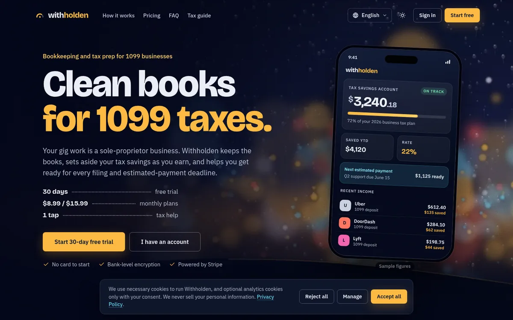
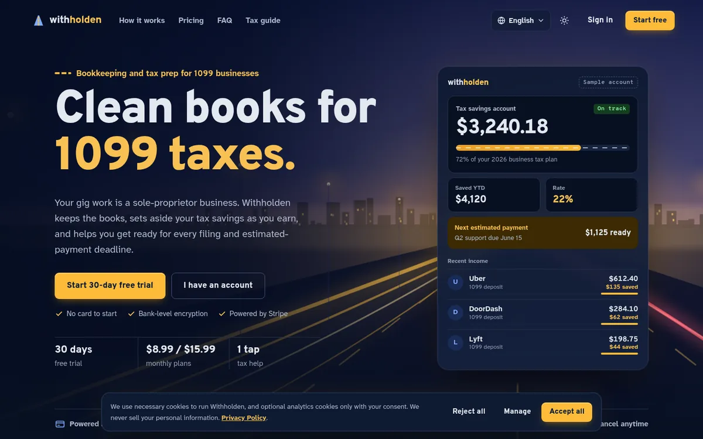
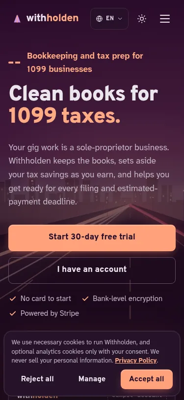
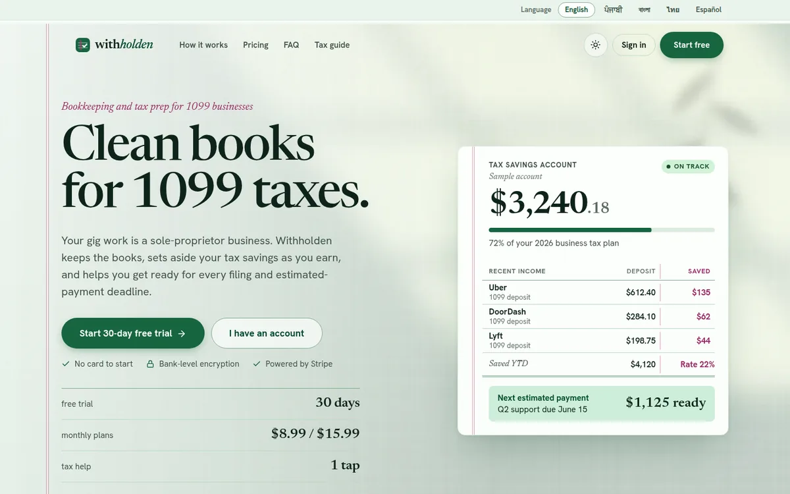
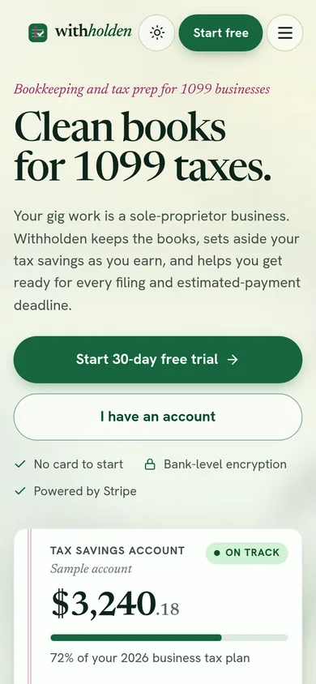
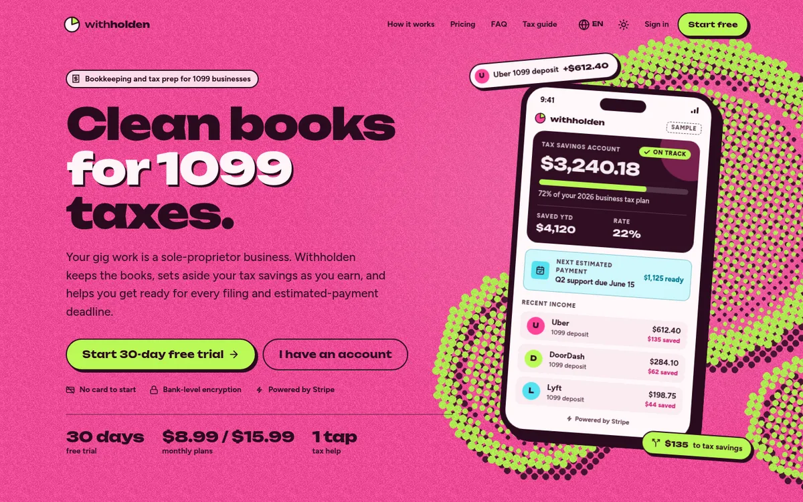
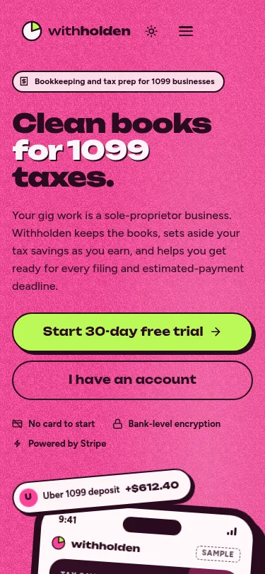
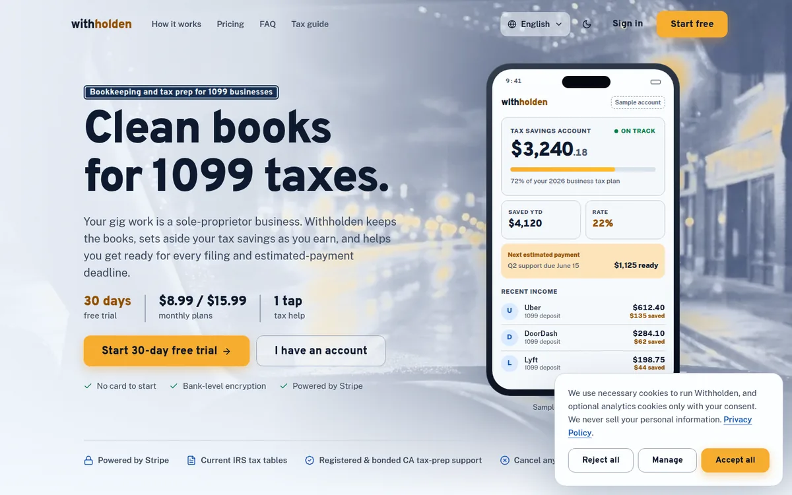
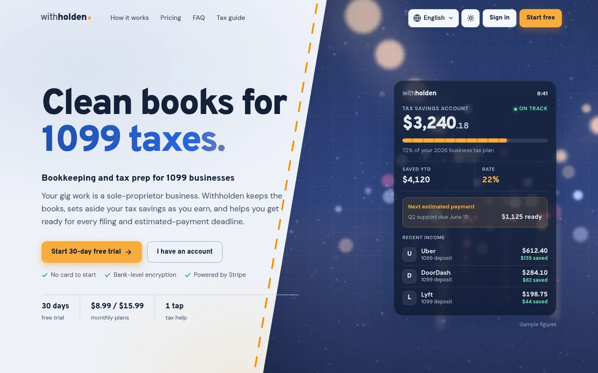

Night Meter
RecommendedA night city behind a tilted phone with a live tax meter, ending on a sunrise. Dark, bold and premium.
Six directions for the new homepage, each a working page built from the current site's copy, prices and FAQ. Open one, look around, then come back and try the next.
The first two are our recommendations. Where a design has a light and a dark version, switch between them on its card.

A night city behind a tilted phone with a live tax meter, ending on a sunrise. Dark, bold and premium.


A drawn golden-hour highway with a calm section rhythm. Warm and polished.


Mint ledger paper, green and raspberry, serif figures and morning light. Light, calm, trustworthy money.


Hot pink, lime and aqua colour blocks, the app as the hero and a payout split slider. Loud, young and phone-first.
Two earlier takes on the night-driving idea that led to the first two designs. Kept here for comparison.

A driver's-seat view of a wet night street, with highway-sign section labels.

A slanted night-street photo edged by a moving lane line, with sample payouts filling the balance.